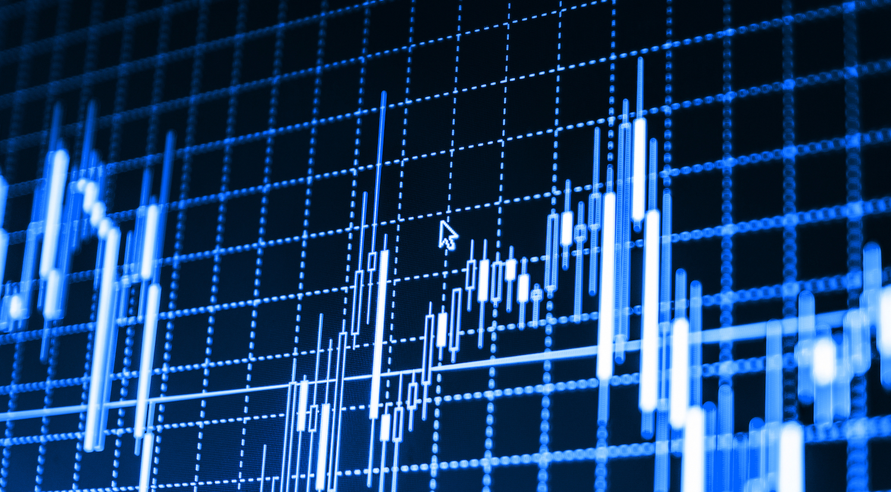
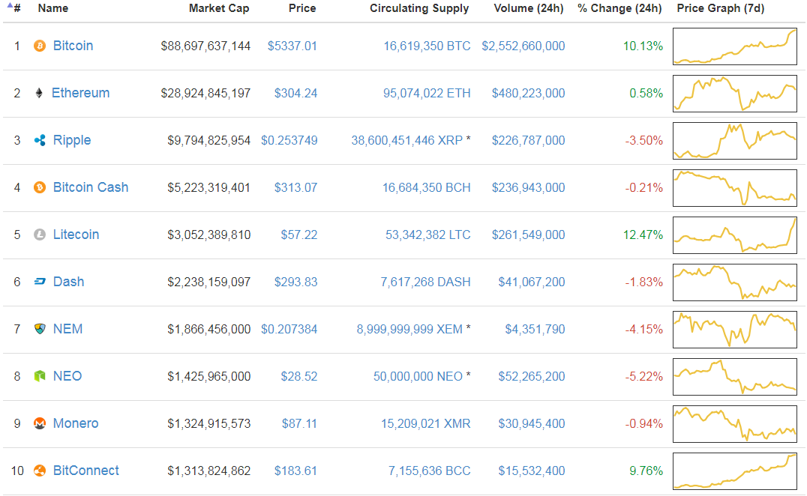
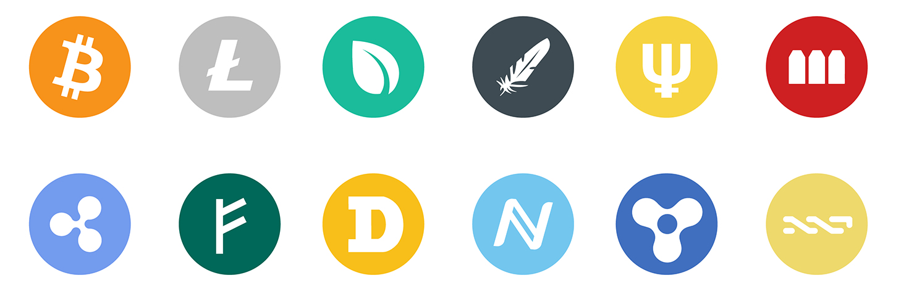

how you invest in cryptocurrencies. Why should you invest in them? Which cryptocurrencies should you put in your portfolio? Where can you buy them, how can you store them?
On June 4th 2012, one Bitcoin was worth $5.49.
On June 6th 2017, the price of Bitcoin closed at $2,851...good for a 51,000%+ gain in five years.
This truly incredible surge has minted thousands of new millionaires ,It has also birthed a booming cryptocurrency industry. After seeing early Bitcoin investors get rich, some of the world’s most talented entrepreneurs and computer programmers have entered the space
If I talking about all cryptocurrencies – the complete market cap soared by 10,000 percent since mid-2013
Holding Bitcoin means to have a share in this venture. If Bitcoin ever replaces monetary reserves of central banks or becomes the dominant currency for international trades – just to name two examples — the value of one Bitcoin will be far beyond 10,000 Dollar. Buying and keeping cryptocurrencies is a bet on the success of this silent revolution of money. It’s like a security of a large ecosystem
If you want to invest in cryptocurrencies, Bitcoin is still a standard item of every portfolio – but it is no longer the onliest asset. In every well-balanced crypto-portfolio today you find other coins, like: • Ethereum • Ripple • Litecoin • Dash • Monero • And many more You can visit website coinmarketcap.com where you can find sorted list of top cryptocurrencies
If you want to have a balanced portfolio at one point in time, it might be a good strategy to simply reflect the ten most valuable currencies in your portfolio. More interesting however is it to take some time, read about those coins, decide, if their vision gets you and make this to the base of your asset selection. The cryptocurrency markets are a blazing, often confusing ecosystem, in which you find thousands of chances to win a lot of money – and to lose it. Every day gives birth to new coins and death to some old coins. Every day sees some coins heavily falling, and some vertically raising.
While some years ago it was a real Odyssey to buy cryptocurrencies, today you have a full scope of options. Mostly buying Bitcoin is not a big problem. You open up an account at the exchange, verify your identity – this is required due to Anti-Money-Laundering rules in most jurisdictions – and fund your account with Dollar or Euro or whatever paper money you use. The question, what exchange to use depends mostly where you live. It’s alway better to use an exchange physically close to you. If it is located in the same jurisdiction like you, you have the best chances to get money legally back if some bad things happen
Other than Bitcoins Altcoins are somehow harder to acquire. Some major exchanges like Kraken, BitFinex, and BitStamp, have started to list some popular Altcoins, like Litecoin, Ethereum, Monero, and Ripple. If they are part of your portfolio, don’t hesitate to buy all at one stop shop. But there are hundreds of cryptocurrencies out there. If you want to go to a crypto supermarket, where you can buy and sell most of them, you need to register at what is usually called an altcoin exchange. Examples are: • Bittrex • C-cex • Bithumb • Poloniex
If you invested not only in Bitcoin but in several Altcoins, there is usually no way around keeping coins on an exchange. You don’t want to get in the trouble of installing, compiling, malware checking, using, syncing and updating the software for every coin you invested in. More as in the process of buying, the trust in an exchange becomes very important, when you store your coins there. There is a long history of hacks and bankruptcies in cryptocurrency markets, most famous the hack of Mt. Gox, which sucked up hundreds of millions of customer’s Dollars. So if you use an exchange to store your coins, you should gather some information: • Where are they located? • Are the owners known? • Since when do they operate? • Do they provide some audits to ensure you that all the coins are available? • How do they react to customer’s requests?